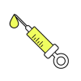
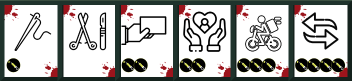
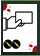
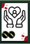
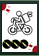
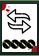
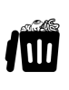

La phase pré-op' - l'acte chirurgical
Méthode :
Chaque joueur choisit :
en fonction des doses

qu'il possède, de se coucher ou de réaliser un acte chirurgical parmi les actions suivantes

et un joueur sur lequel il souhaite réaliser l'acte (sa cible)
Fondamental : Un chirurgien sûr de lui est un chirurgien qui opère vite
Plus vite le joueur valide son acte chirurgical, plus vite il pourra utiliser le bloc opératoire pour effectuer l'acte sur son patient.
Définition :
.
.

Pour 2 doses, le prélèvement[3] permet de piocher un organe dans la poubelle de la morgue pour la mettre dans mon frigo (ma main) ou de piocher une carte Magouille
.

Pour 2 doses, le don d'organe[4] permet de poser un organe de mon frigo (ma main) OU de ma créature sur une autre créature
.

Pour 3 doses, la transplantation[5] permet de prendre un organe d'une autre créature pour le poser sur la mienne
.

Pour 4 doses, la substitution[6] permet d'échanger un même organe entre ma créature et une autre OU entre mon frigo (ma main) et ma créature
Remarque : Poubelle
Mais où vont les organes déchus lors des ablations et autres opérations en pure perte ? ? ?
Dans la poubelle à organes de la morgue bien entendu  .
.
Fondamental :
Les joueurs choisissent une action sur un personnage mais sans sélectionner l'organe visé. Les organes sont sélectionnés seulement au moment de jouer l'action. En effet, il arrive souvent que l'organe imaginé au moment de sélectionner son acte chirurgical, ait disparu en cours de route ou qu'une stratégie plus opportune pointe le bout de son nez... Aux joueurs de s'adapter aux organes présents au moment de leur acte chirurgical...